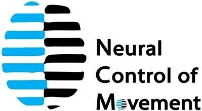
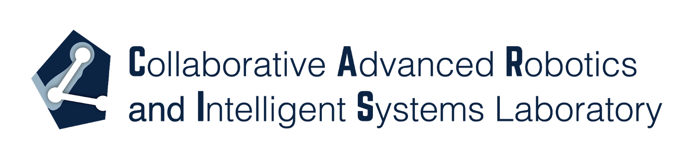
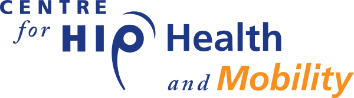
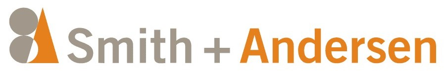

Research
Hilfsassistierende (Research Assistant)
2020 October - Present
pupilometry computer vision entrepreneurship More Info

- Prototyped mechanical set-up for a minimally viable product (MVP) that stages proper luminosity and occlusion for pupil-arousal mechanics in controlled nueral feedback
- Prototyped simple TCP network communication protocol for transferring information from the processor to external display device
- Estimated pupil size from front-facing camera images though classical image analysis algorithms
Mechatronics Research Assistant
2019 May - 2019 August
python data acquisition real-time systems More Info

- Developed wireless sensor data acquisition systems for a wheelchair, including collection of inertial measurement unit (IMU) data, to reliably sample sensors at 300 Hz through Bluetooth and Wi-Fi
- Utilized a combination of Python and C++ for data acquisition software to establish data transfer integrity and the reconstructed time synchronization across various sensors
- Initiated experimental work in user motion intention, terrain classification, and terrain slope based on the environmental impulse excitations gathered by the data acquisition systems
- Researched mechanical phenomena such as caster flutter and rigid body kinematics for rationalizing terrain machine learning classifications
Published Works
M. Khalili, K. T. McConkey, K. Ta, L. C. Wu, H. F. M. Van der Loos and J. F. Borisoff, "Development of A Learning-Based Terrain Classification Framework for Pushrim-Activated Power-Assisted Wheelchairs*,"2020 42nd Annual International Conference of the IEEE Engineering in Medicine & Biology Society (EMBC), Montreal, QC, Canada, 2020, pp. 4762-4765, doi: 10.1109/EMBC44109.2020.9175678.
Research Assistant
2016 May - 2016 September
testing kinematics data acquisition biomedical

- Collected dynamic data with accelerometers in high impulse linear impact testing to determine optimal helmet padding material and configurations for preventing head trauma
- Investigated statistical trends for x-ray machinery to determine long-term consistency for bone mass density studies
- Operated and maintained medical imaging tools based on fluoroscopy including DXA, CT, and C-arm machines for internal testing of radiation protection equipment and bone phantom samples
- Ran data collection sessions and interviews with elderly at-risk populations to assess how group activity encourages healthier and more mobile lifestyles
Industry
Solar Predictive Analytics and Modelling Co-op
2018 January - 2018 August
python reliability modelling thermal modelling high voltage sustainability
- Implemented machine learning anomaly detection algorithms to analyze incoming data from on-site inverters for predictive and preventative maintenance reliability models
- Developed algorithms in Python to more accurately capture annual temperature profiles by querying 30 arc-second GIS weather data for geographical idiosyncrasies
- Validated thermal modelling, predictive algorithms, and service predictions for Schneider Electric Solar Inverters to ensure internal and external reliability data aligned with cloud data from on-site inverters
- Conducted stress tests and automated data collection of thermal and electrical characteristics of solar utility inverters
Mechanical Engineering Intern
2017 May - 2017 August
rapid prototyping biomedical design for manufacturing
- Designed a novel urinary continence device through rapid prototyping, clinical testing, and low-quantity production to meet accelerated 3-month product development deadline
- Created and maintained documentation and manufacturing drawings to comply with Health Canada and FDA regulation using ISO 9001
- Designed injection-molded parts for manufacturing with consideration to parting lines, drafting, and symmetry
Junior Mechanical Designer
2016 September - 2016 December
thermal modelling sustainability consulting

- Specced electrical and mechanical HVAC equipment requirements to suppliers and on-site contractors to optimize thermal performance and building systems efficiency
- Calculated heating, cooling, and ventilation loads based on building location, room usage, and building design
Teaching
Undergraduate Teaching Assistant
2019 January - 2020 April
thermal modelling education hands-on
- Instructed, evaluated, and provided feedback to second year students through thermodynamic and fluid dynamic lab experiments to demonstrate core mechanical engineering topics
- Performed lab lectures to go over key concepts explored in lab experiments, ensuring students understood which mechanical phenomena to note in report analysis